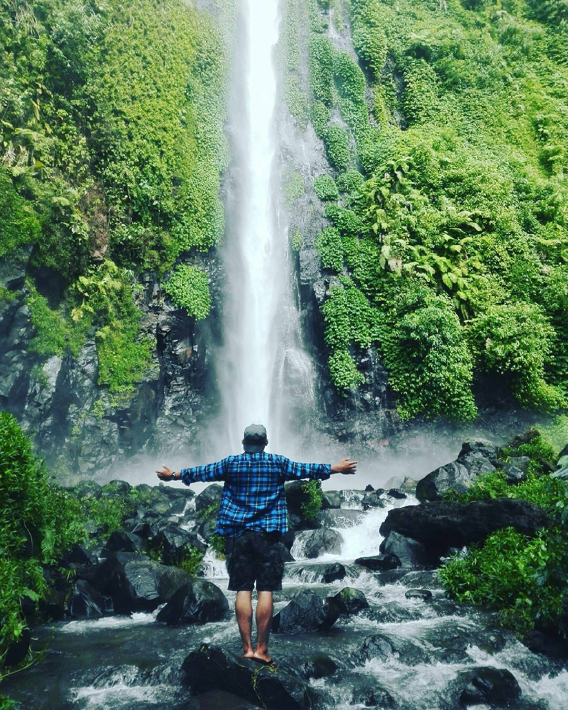

Air Terjun atancak gunung pasang yang lokasinya berada di kecamatan panti, bagi warga jember khususnya para petualang wisata ini pasti tidak asing lagi, selain keindahan dan kesejukan akses untuk menuju air terjun ini terbilang menantang dan butuh sedikit perjuangan, namun hal tersebutlah yang membuat seru ketika menaklukkan gunung pasang ini
Lokasi Air Terjun Tancak
Berlokasi di Desa Suci, Kecamatan panti, Kabupaten Jember, jika dari pusat kota jember kurang lebihnya berjarak 20Km, untuk rute cukup mudah tersedia juga papan penunjuk jalan, jika dari kota arahkan laju kendaraan anda ke Mangli, sampai di peremnpatan lampu merah mangli anda belok kanan, terus hingga ada persimpangan pertama (belok kiri) dari situ ikuti jalan dan papan penunjuk arah bisa ditemukan dengan mudah.
Keindahan di Air Terjun Tancak
Air terjun tancak ini memiliki ketinggian kurang lebihnya 82meter, airnya sangat jernih dan cukup dingin,dibawah air terjun tancak ini terdapat sebuah kolam yang bisa digunakan untuk menceburkan diri maupun bermain main, tapi sangat sayiag deh kalau sampai lokasi tersebut tidak merasakan segarnya air terjun tancak gunung pasang ini, pemandangan hijau sekitar juga sangat keren buat pengambilan foto-foto, apalagi anda datang bersama teman-teman ramas pasti lebih mengesankan

Perjalanan menuju Air Terjun Tancak
Perjalanan yang diawali dari arah kota Jember adalah perjalanan yang cukup menyenangkan dengan udara yang cukup bersih,Perjalanan yang ditempuh dengan kecepatan 30-50 km/jam.Jalur Desa yang cukup mulus walaupun ada lubang beberapa tapi keseluruhan mantap.Setelah jalan desa memasuki wilayah PT. Perkebunan Nusantara,Selanjutnya melewati area perkebunan,dengan jalanan aspal menyusuri lereng perbukitan dan mengikuti jalur utama.Jarak yang ditempuh cukup lumayan dari pusat kota Jember kurang lebih 25 km menuju lokasi terakhir parkin dan kita masih melakukan perjalanan dengan jalan kaki kira kira 4 km dengan jalan setapak dengan beberapa titik yang cukup terjal yang perlu hati-hati dalam melewati jalan ini